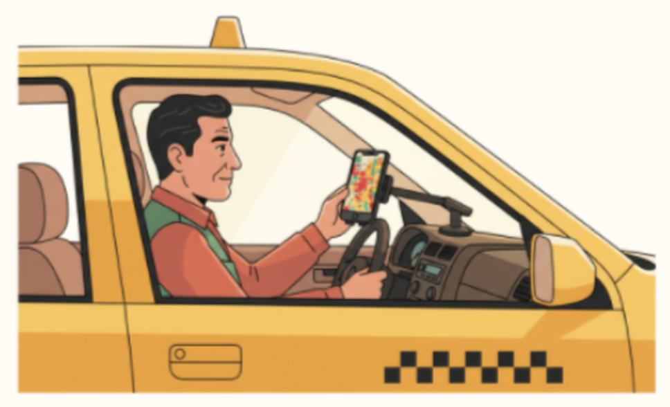
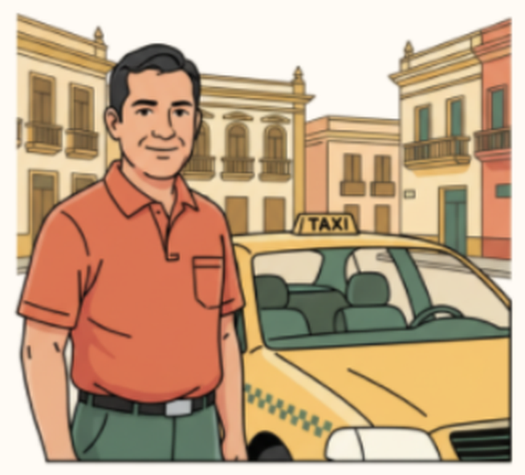

Análisis del macroentorno
Calles Seguras · Callao
Hacer un mapa web es accesible, pero conseguir datos confiables, convenios y la confianza de los vecinos toma tiempo. Una municipalidad podría lanzar su propia app.
Los datos vienen de fuentes públicas (Mininter, INEI, Gobierno Regional del Callao) y hay varias opciones de hosting y de mapas.
El ciudadano usa el mapa gratis y cambia de fuente con facilidad. Municipalidades y empresas son pocos clientes y negocian los convenios.
Grupos de WhatsApp, redes sociales, noticias, aplicaciones de mapas y aplicativos municipales de alerta que la gente ya usa a diario.
Pocas propuestas de mapas de riesgo pensadas para el ciudadano del Callao. El referente es el Mapa del delito georreferenciado del Mininter, orientado al análisis institucional.
Comparación con servicios similares
| Criterio | Mapa del delito georreferenciadoMininter · Observatorio Nacional de Seguridad Ciudadana | Alerta ciudadano Pueblo LibreMunicipalidad de Pueblo Libre | Calles SegurasNuestra propuesta |
|---|---|---|---|
| Qué es | Herramienta oficial de información territorial sobre delitos | Aplicativo móvil municipal de alertas | Plataforma web y móvil con mapa de calor |
| Acceso | Consultas de acceso público | Vecinos registrados con código de contribuyente | Libre para ciudadanos; servicios para instituciones |
| Información | Datos territoriales de delitos registrados | Alertas y pedidos de ayuda en tiempo real | Robos por zona y horario, por niveles de riesgo |
| Cobertura | Nacional | Distrito de Pueblo Libre | Distrito del Callao |
| Enfoque | Análisis y planificación institucional | Respuesta inmediata ante emergencias | Prevención antes de salir |
| Participación ciudadana | Consulta de información oficial | Reportes de vecinos al centro de emergencias | Reportes ciudadanos como fuente complementaria |
| Modelo | Servicio público del Estado | Servicio municipal | Modelo social: convenios, suscripciones y publicidad local |
Fuentes: El Peruano (2026) y Canal N (2023).
Lo que aprendimos del benchmarking


Tiene datos oficiales y cobertura nacional, pero está orientado al análisis y la planificación institucional.
Responde rápido ante una emergencia, pero solo sirve a los vecinos registrados de un distrito.
Se distingue por mostrar al ciudadano del Callao, de un vistazo y antes de salir, en qué zonas y horarios se concentran los robos.
Fuentes oficiales para dar credibilidad al mapa y verificación de usuarios para evitar falsas alarmas.